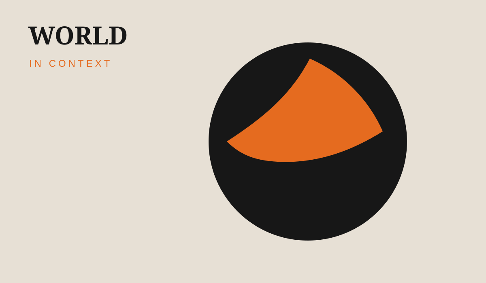

India cuts windfall taxes on diesel and aviation-fuel exports
The change takes effect October 1, according to a government order reported by Reuters.
Read source →Independent-style presentation for important developments across India and the world, with clear sourcing and concise context.
Read today's stories →The change takes effect October 1, according to a government order reported by Reuters.
Read source →India has lowered windfall taxes on diesel and aviation turbine fuel exports, effective October 1.
Reuters source →
The two leaders discussed trade, defence, energy and critical technologies as India seeks progress on an interim trade arrangement.
Reuters source →TakeMe2Space plans to launch its MOI-1A satellite on SpaceX's Transporter-18 mission, with AI processing in orbit.
Reuters source →The programme includes transmission investment and incentives for battery energy storage.
Reuters source →The new Hyderabad hub is expected to add 3,000 jobs over two years, according to Telangana authorities cited by Reuters.
Reuters source →Reuters reported a 6.1% September decline for the Nifty 50 and a 5.8% fall for the Sensex.
Reuters source →सरकार के आदेश के अनुसार बदलाव 1 अक्टूबर से प्रभावी है।
कंपनी के नए केंद्र में शुरुआती चरण में 500 पेशेवर काम करेंगे।
MOI-1A मिशन का लक्ष्य अंतरिक्ष में AI मॉडल से डेटा प्रोसेस करना है।
Foreign outflows and higher global rates remained important market themes.
Reuters reports a new MDR structure is scheduled for larger transactions from October 15.
Reuters source →Transmission and storage are central to the newly approved clean-energy programme.
Persistent rain has affected tennis, surfing and cricket, with the Games scheduled to continue through October 4.
Reuters source →